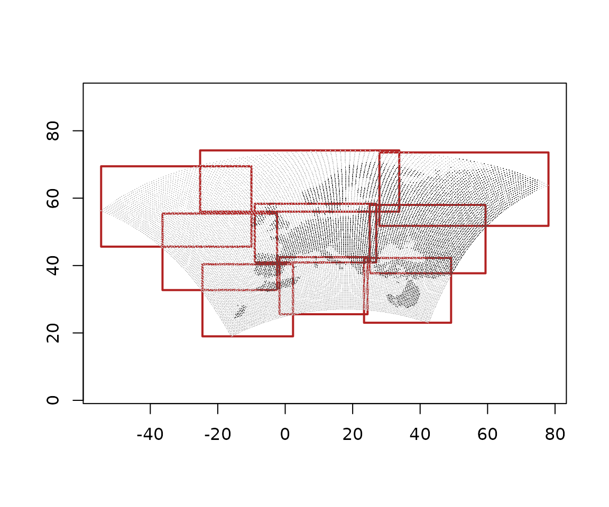
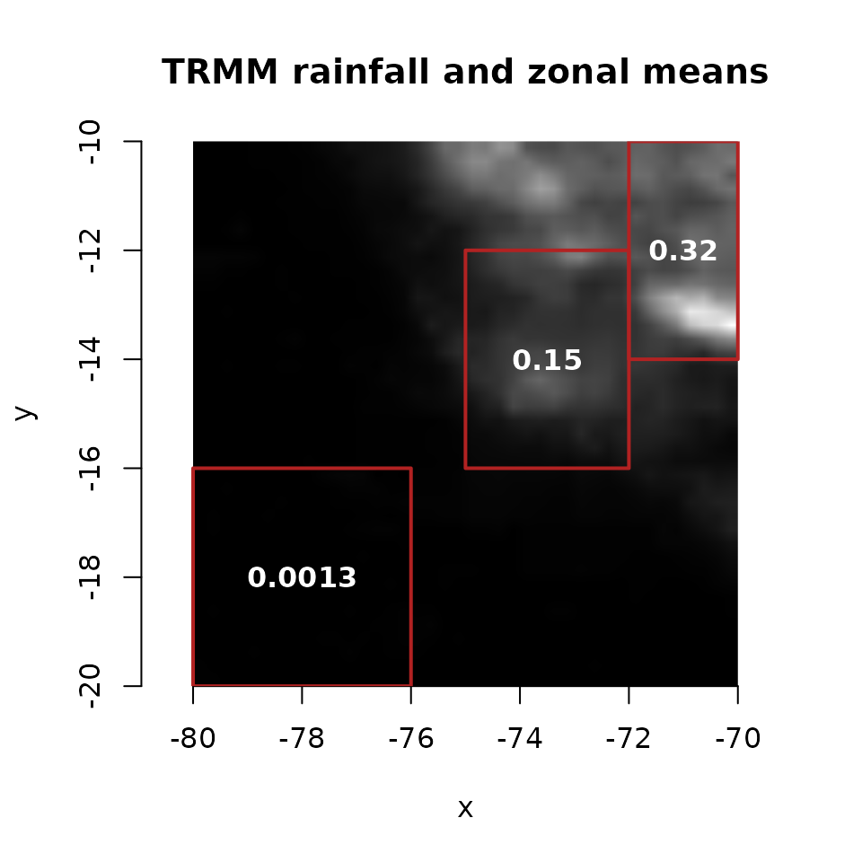

Two kinds of data cube are not regular rasters in longitude and latitude: grids whose coordinates are 2-D arrays, and vector data cubes, whose spatial dimension is a set of geometries. Both render as rows like any other result. This article shows what else works on them.
Regular in what?
rotated_pole.nc holds temperature over Europe on a grid
that is regular in a rotated-pole frame: its x and
y coordinates are 1-D and evenly spaced, and the Rasters article renders it as a raster in that
frame. Transform its cell centres to ordinary longitude and latitude,
and the same grid is curvilinear: each cell has its own longitude and
latitude, held in 2-D arrays. The grid has not changed, only the frame
it is described in. Regular in
what? is a short book about that distinction.
The file’s grid mapping lacks the grid_mapping_name
pyproj needs, so the builder supplies it, then adds 2-D lon
and lat as coordinates:
f <- system.file("extdata/autotest/rotated_pole.nc", package = "xrdbi")
make_curvi <- sprintf("
import xarray as xr, numpy as np, pyproj
ds = xr.open_dataset('%s', engine='netcdf4')
cf = dict(ds.projection.attrs, grid_mapping_name='rotated_latitude_longitude')
to_lonlat = pyproj.Transformer.from_crs(pyproj.CRS.from_cf(cf), 'OGC:CRS84',
always_xy=True)
X, Y = np.meshgrid(ds.x.values, ds.y.values)
lon, lat = to_lonlat.transform(X, Y)
curvi = ds.assign_coords(lon=(('y', 'x'), lon), lat=(('y', 'x'), lat))
", f)
reticulate::py_run_string(make_curvi)
con <- dbConnect(xarray(), object = reticulate::py_eval("curvi", convert = FALSE))
con
#> <XarrayConnection>
#> dims: y: 108, x: 137
#> vars: projection, tg
dbListFields(con, "tg")
#> [1] "y" "x" "lon" "lat" "tg"The 2-D coordinates are columns of every row:
dbGetQuery(con, "ds.tg.isel(y=50, x=slice(60, 63))")
#> x y lon lat tg
#> 1 -8.850000 -1.65 4.633772 48.29996 -1.10
#> 2 -8.410000 -1.65 5.285236 48.37685 -1.58
#> 3 -7.969999 -1.65 5.938648 48.44995 -1.81Filtering on longitude and latitude
A filter on lon and lat cannot be a
.sel(), because they are not dimensions. The tbl evaluates
the filter on the coordinates when it compiles, narrows the read to the
block of y and x holding every cell that
passes, and keeps the filter itself as an exact pandas query on that
block. Here, a box around Oslo:
oslo <- tbl(con, "tg") |> filter(lon > 10, lon < 12, lat > 59, lat < 61)
show_query(oslo)
#> ds['tg'].isel(y=slice(73, 78), x=slice(71, 74)).pipe(_xrdbi_render).query('`lat` > 59 and `lat` < 61 and `lon` > 10 and `lon` < 12')
collect(oslo)
#> # A tibble: 13 × 5
#> y x lon lat tg
#> <dbl> <dbl> <dbl> <dbl> <dbl>
#> 1 8.47 -4.01 10.3 59.0 NaN
#> 2 8.47 -3.57 11.1 59.1 2.66
#> 3 8.47 -3.13 12.0 59.1 2.06
#> 4 8.91 -4.01 10.2 59.4 -1.41
#> 5 8.91 -3.57 11.0 59.5 0.270
#> 6 8.91 -3.13 11.9 59.5 0.460
#> 7 9.35 -4.01 10.1 59.9 -4.89
#> 8 9.35 -3.57 11.0 59.9 -3.15
#> 9 9.35 -3.13 11.8 60.0 -2.32
#> 10 9.79 -3.57 10.9 60.4 -5.17
#> 11 9.79 -3.13 11.7 60.4 -4.46
#> 12 10.2 -3.57 10.8 60.8 -6.73
#> 13 10.2 -3.13 11.7 60.8 -5.84The block is 5 by 3 cells of the 108 by 137 grid, and 13 of those 15 pass. Only the block is read.
Nearest points
xarray’s NDPointIndex (it needs scipy) finds the nearest
cell by longitude and latitude on a grid like this, pointwise for
vectors of points. It is an ordinary statement, with the points passed
as params:
dbGetQuery(con,
"ds.set_xindex(('lat', 'lon'), xr.indexes.NDPointIndex).tg.sel(
lat=xr.DataArray(lats, dims='pt'), lon=xr.DataArray(lons, dims='pt'),
method='nearest')",
params = list(lats = c(59.91, 48.86), lons = c(10.75, 2.35)))
#> pt x y lat lon tg
#> 1 0 -3.57 9.3500004 59.93001 10.956550 -3.15
#> 2 1 -10.17 -0.7700005 48.90790 2.418087 0.03
dbDisconnect(con)Chunk envelopes
Many curvilinear products are stored with only the 2-D longitude and latitude, and no 1-D coordinates for the grid’s own dimensions. Here is the same grid written that way, as a chunked zarr store:
path <- file.path(tempfile(), "curvi.zarr")
dir.create(dirname(path))
reticulate::py_run_string(sprintf(
"curvi.drop_vars(['x', 'y', 'projection']).to_zarr('%s', mode='w',
zarr_format=3, consolidated=False, encoding={'tg': {'chunks': (36, 46)}})",
path))
z <- dbConnect(xarray(), path, engine = "zarr", consolidated = FALSE)
z
#> <XarrayConnection>
#> dsn: /tmp/RtmpyqUzdw/filebbc17aef635/curvi.zarr
#> dims: y: 108, x: 137
#> vars: tgxr_chunks() recognises 2-D longitude and latitude (by CF
standard_name, units, or common names) and gives each chunk
the envelope of its block of them. With no 1-D coordinates to place the
chunks, geometry is that envelope, in longitude and
latitude (OGC:CRS84):
ch <- xr_chunks(z, "ds.tg")
ch[, c("y_chunk", "x_chunk", "lon_min", "lon_max", "lat_min", "lat_max")]
#> y_chunk x_chunk lon_min lon_max lat_min lat_max
#> 1 0 0 -24.539378 2.319373 18.99459 40.38314
#> 2 0 1 -1.698114 24.414331 25.55277 42.49998
#> 3 0 2 23.372907 49.181283 23.02998 42.25254
#> 4 1 0 -36.379684 -2.406879 32.72162 55.43054
#> 5 1 1 -9.016538 26.998590 40.92385 58.33997
#> 6 1 2 25.057433 59.391683 37.70912 57.99286
#> 7 2 0 -54.578670 -10.020226 45.60913 69.46307
#> 8 2 1 -25.227707 33.809784 55.99827 74.17994
#> 9 2 2 27.927294 78.053196 51.78004 73.56975
wk::wk_crs(ch$geometry)
#> [1] "OGC:CRS84"
cells <- dbGetQuery(z, "ds.tg")
plot(ch$geometry, border = "firebrick", lwd = 2)
points(cells$lon, cells$lat, pch = ".",
col = ifelse(is.na(cells$tg), "grey80", "grey30"))
The envelopes overlap, because the chunks are rectangles in the rotated frame and not in longitude and latitude, and they bound the cell centres, so they are about half a cell inside the cells’ edges.
A raster rendering needs regular 1-D coordinates, so
xr_raster() refuses this store, and says why:
try(xr_raster(z, "ds.tg"))
#> Error : dimension 'y' has no coordinate; cannot place cells
dbDisconnect(z)Vector data cubes
A vector data cube has a dimension of geometries in place of a grid, as xvec builds. Zonal statistics of the TRMM rainfall over three boxes given from R, through xvec (it needs geopandas, rasterio and rioxarray):
reticulate::py_require(c("xvec", "geopandas", "rasterio", "rioxarray"))
invisible(reticulate::import("xvec")) # registers the .xvec accessor
trmm <- dbConnect(xarray(),
system.file("extdata/autotest/trmm.nc", package = "xrdbi"))
boxes <- wk::rct(c(-80, -75, -72), c(-20, -16, -14),
c(-76, -72, -70), c(-16, -12, -10), crs = "EPSG:4326")
zonal <- "ds.pcp.xvec.zonal_stats(boxes, x_coords='longitude',
y_coords='latitude', stats=['mean', 'max'], method='rasterize', n_jobs=1)"
cube <- dbGetQuery(trmm, zonal, params = list(boxes = wk::as_wkb(boxes)))
cube
#> geometry zonal_statistics
#> 1 <POLYGON ((-80 -20, -76 -20, -76 -16, -80 -16, -80 -20))> mean
#> 2 <POLYGON ((-80 -20, -76 -20, -76 -16, -80 -16, -80 -20))> max
#> 3 <POLYGON ((-75 -16, -72 -16, -72 -12, -75 -12, -75 -16))> mean
#> 4 <POLYGON ((-75 -16, -72 -16, -72 -12, -75 -12, -75 -16))> max
#> 5 <POLYGON ((-72 -14, -70 -14, -70 -10, -72 -10, -72 -14))> mean
#> 6 <POLYGON ((-72 -14, -70 -14, -70 -10, -72 -10, -72 -14))> max
#> time pcp
#> 1 2011-01-01 0.001335685
#> 2 2011-01-01 0.019879032
#> 3 2011-01-01 0.148933947
#> 4 2011-01-01 0.420632631
#> 5 2011-01-01 0.322637200
#> 6 2011-01-01 0.830516875The geometry arrives as wk::wkb() with the CRS of the
cube’s geometry index, so it converts straight to sf:
wk::wk_crs(cube$geometry)
#> [1] "EPSG:4326"
sf::st_as_sf(cube)
#> Simple feature collection with 6 features and 3 fields
#> Geometry type: POLYGON
#> Dimension: XY
#> Bounding box: xmin: -80 ymin: -20 xmax: -70 ymax: -10
#> Geodetic CRS: WGS 84
#> zonal_statistics time pcp geometry
#> 1 mean 2011-01-01 0.001335685 POLYGON ((-80 -20, -76 -20,...
#> 2 max 2011-01-01 0.019879032 POLYGON ((-80 -20, -76 -20,...
#> 3 mean 2011-01-01 0.148933947 POLYGON ((-75 -16, -72 -16,...
#> 4 max 2011-01-01 0.420632631 POLYGON ((-75 -16, -72 -16,...
#> 5 mean 2011-01-01 0.322637200 POLYGON ((-72 -14, -70 -14,...
#> 6 max 2011-01-01 0.830516875 POLYGON ((-72 -14, -70 -14,...
means <- cube[cube$zonal_statistics == "mean", ]
r <- xr_raster(trmm, "ds.pcp.isel(time=0)")
gdalraster::plot_raster(r, main = "TRMM rainfall and zonal means")
plot(means$geometry, add = TRUE, border = "firebrick", lwd = 2)
bb <- as.data.frame(unclass(boxes)) # the boxes' corners, in cube order
text((bb$xmin + bb$xmax) / 2, (bb$ymin + bb$ymax) / 2,
labels = signif(means$pcp, 2), col = "white", font = 2)
A vector cube has no raster rendering:
try(xr_raster(trmm, zonal, params = list(boxes = wk::as_wkb(boxes))))
#> Error : 'geometry' holds geometries: a vector data cube has no raster rendering; use dbGetQuery() for its rows (geometry as wk::wkb)
dbDisconnect(trmm)Where next
- Parameters covers how geometry is passed from R.
-
Chunk maps has more on
xr_chunks(). - Regular in what? on grids, frames and the curvilinear confusion.